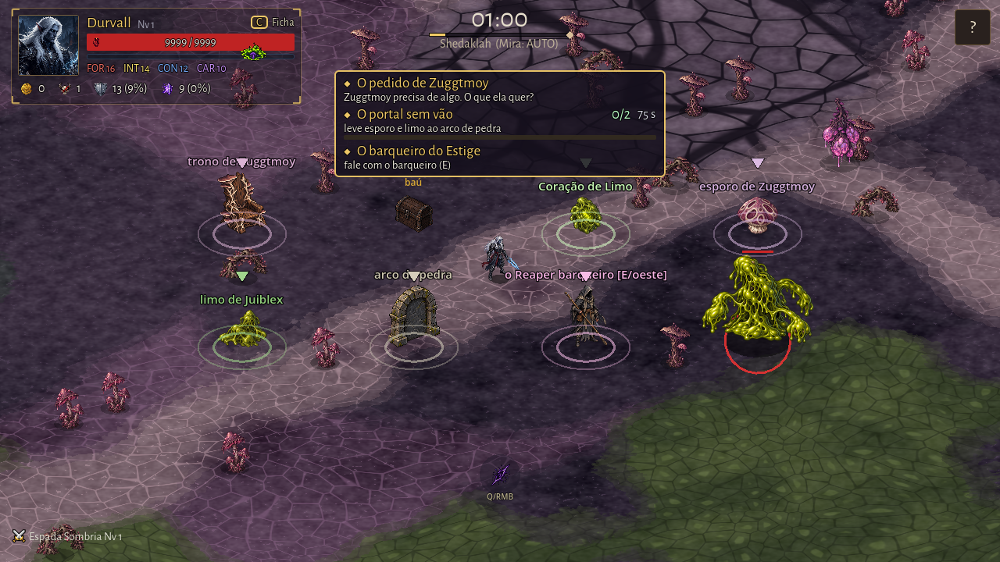
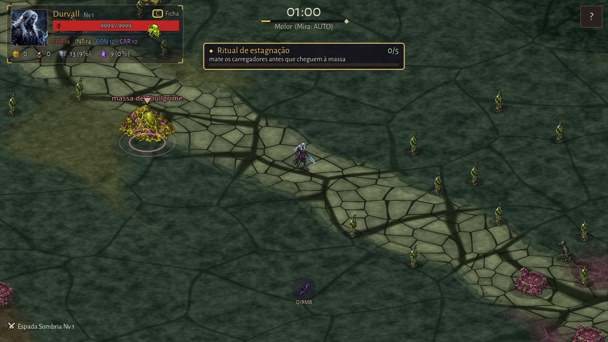
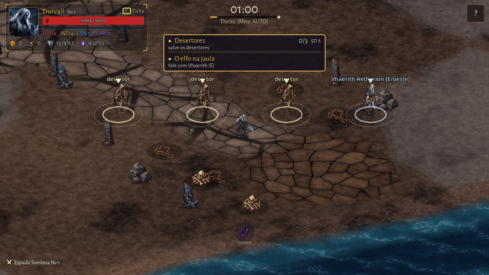
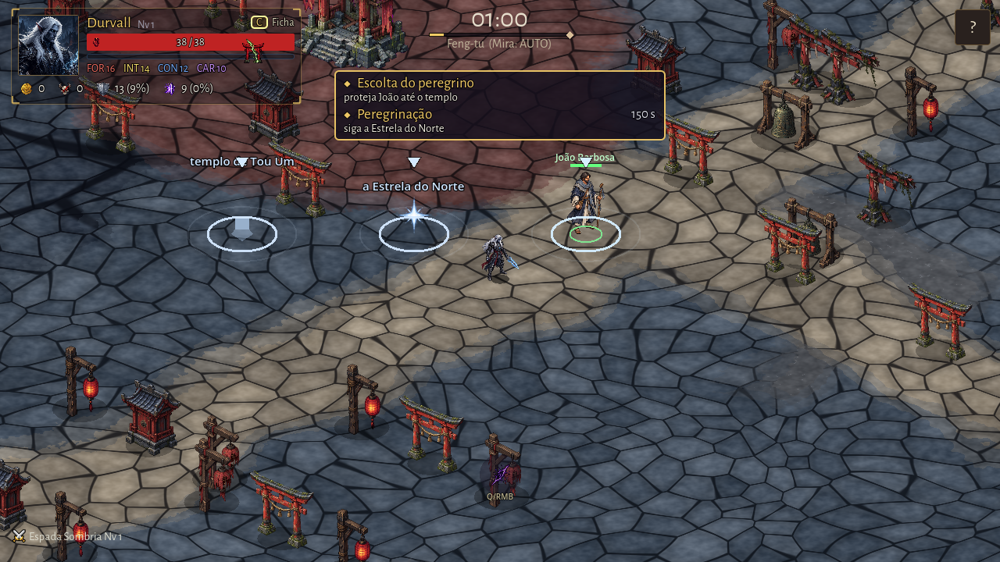
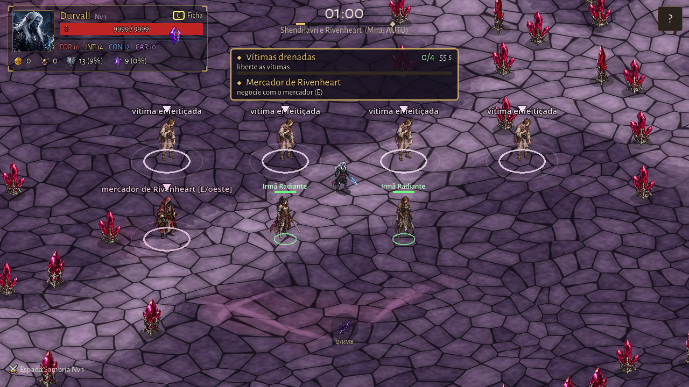
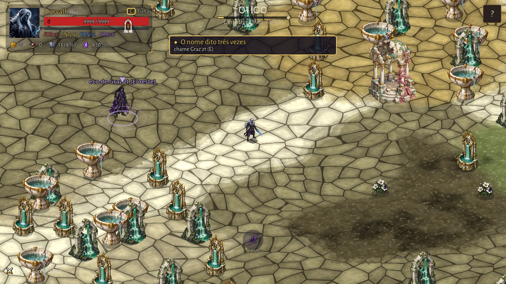
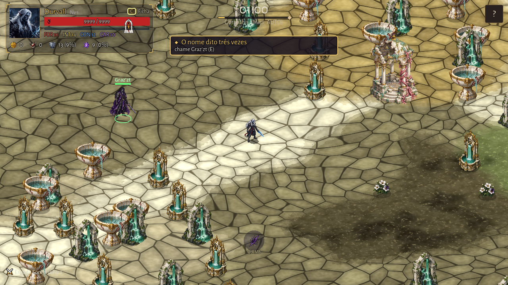

Dezessete revisões aceitas, preparadas e conectadas aos eventos/aliados e à Manifestação de Juiblex. Uso local DRAFT autorizado; sem promoção a CANON.
Sete capturas reais do runtime, em seis biomas, com simulação e posições controladas para conferir arte, base e rótulos. Avisos iniciais ocultos apenas na fixture. Capturas não constituem playtest humano. O templo-alvo, jaula, canoa e animações seguem pendentes.
Manifesto · Admissão DRAFT · QA das capturas · Verificação · Testes · Roteiro de playtest · Recibo 1 · Recibo 2 · Recibo 3 · Recibo 4

trono_zuggtmoy, coracao_limo, esporo_zuggtmoy, limo_juiblex, arco_pedra, npc_reaper_barqueiro, manifestacao_de_juiblex

massa_thullgrime

npc_desertor_durao, npc_desertor_durao, npc_desertor_durao, npc_vhaerith_aetherion

estrela_do_norte, npc_joao_barbosa

npc_vitima_enfeiticada, npc_vitima_enfeiticada, npc_vitima_enfeiticada, npc_vitima_enfeiticada, npc_mercador_rivenheart, npc_nyxara, npc_vaelis

npc_grazzt_aliado

npc_grazzt_aliado
Originais preservados; recorte proporcional e transparência determinísticos no Godot. Altura de leitura: 80 px NPCs/props/aliados; 48 px estrela/coletáveis. Juiblex mantém escala e renderer estático existentes.
Suíte: zero falhas de testes. O log ainda registra as duas ausências anteriores de idle.png dos heróis Erik/Arlindo; não há novo erro de script ART-032.